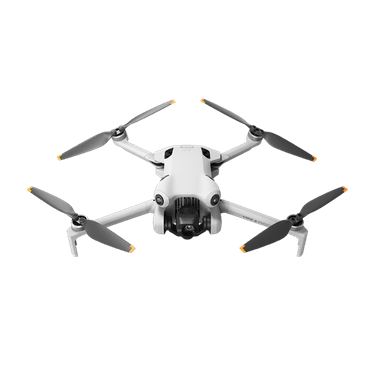
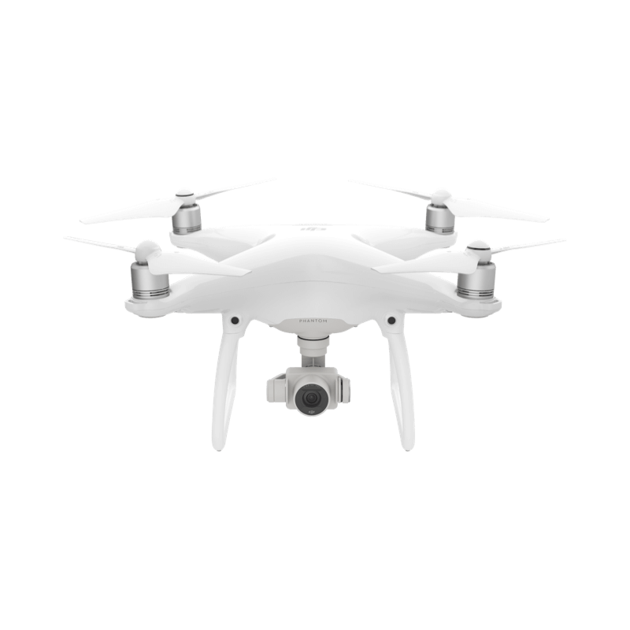
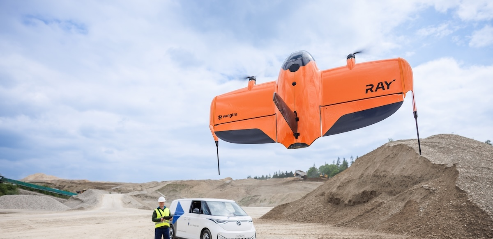
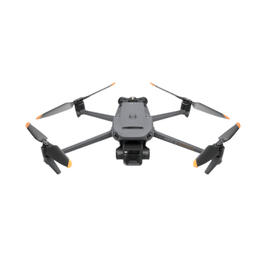
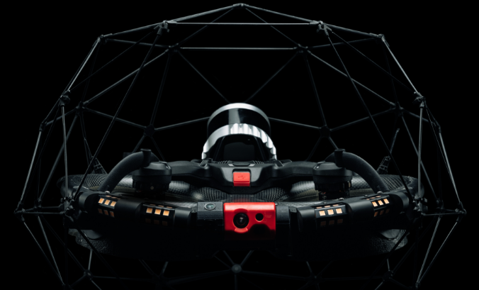
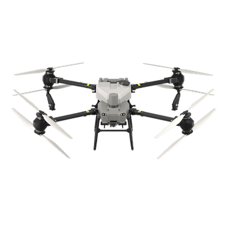
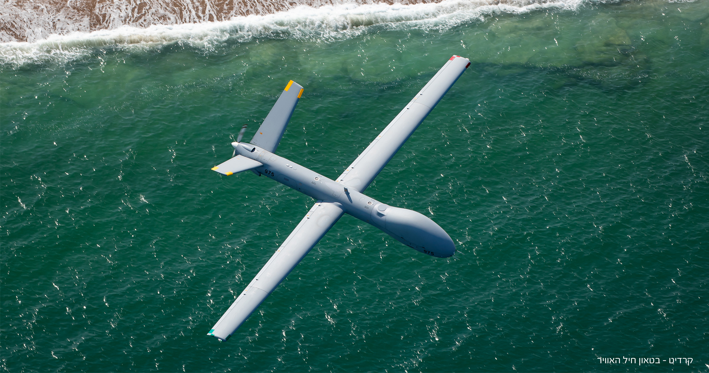
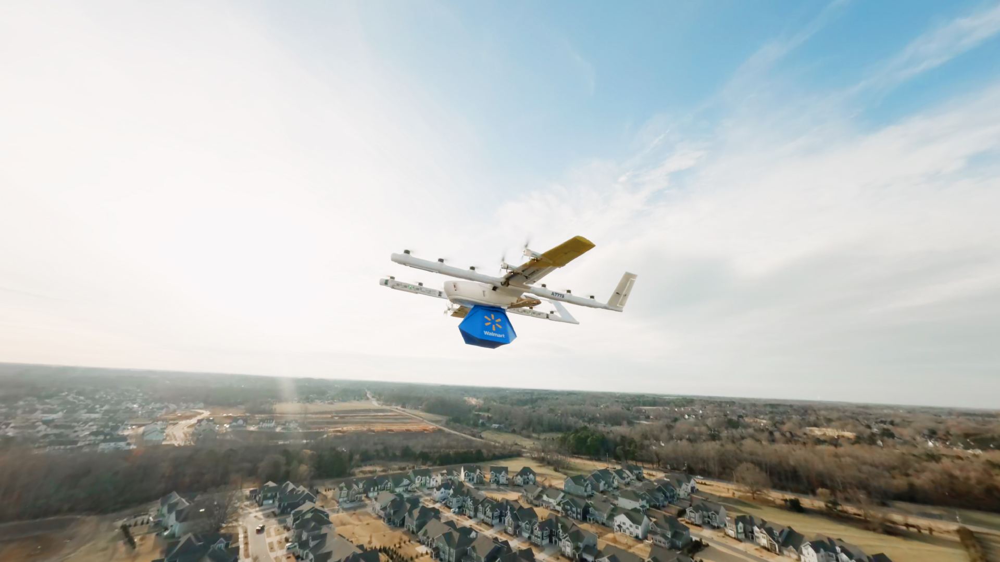
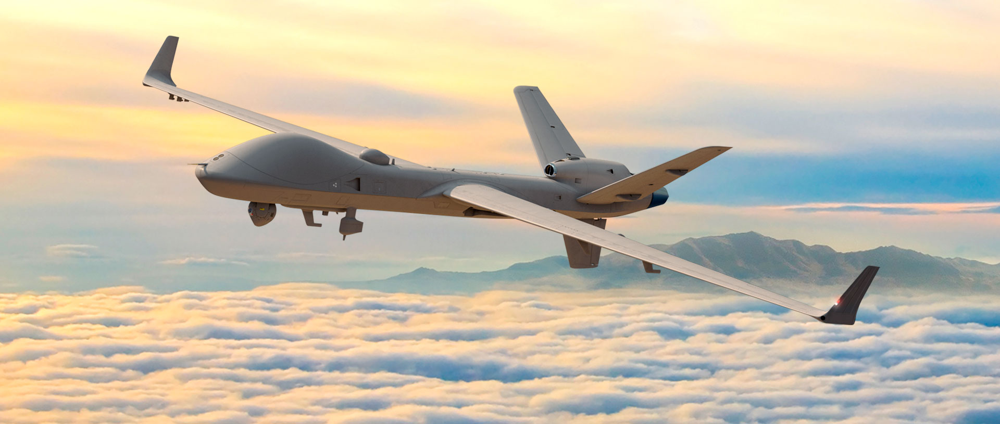
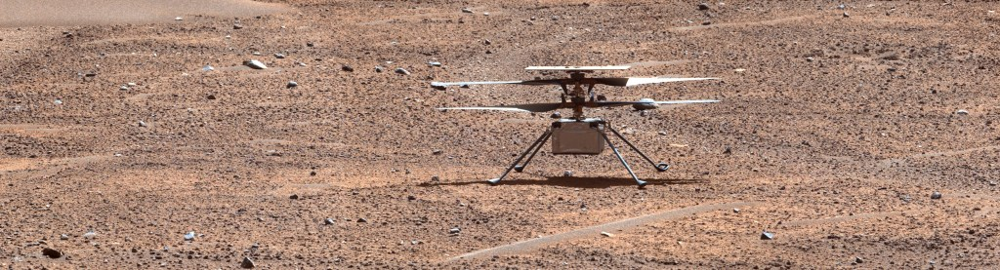

EPISÓDIO 01 · PILOTO EM VÍDEO
O drone é só uma parte do sistema
Da aeronave à decisão: o que a missão precisa entregar.
Assistir e explorar →12 TEMAS PARA EXPLORAR
Assista ao piloto e percorra os temas da série. Cada página reúne explicações, modelos, casos e leituras para aprofundar o assunto.

EPISÓDIO 01 · PILOTO EM VÍDEO
Da aeronave à decisão: o que a missão precisa entregar.
Assistir e explorar →
EPISÓDIO 02 · LEITURA DISPONÍVEL
Propulsão, sensores e controle sem transformar a explicação em caixa-preta.
Explore o tema →
EPISÓDIO 03 · LEITURA DISPONÍVEL
ANAC, DECEA e ANATEL na mesma missão.
Explore o tema →
EPISÓDIO 04 · LEITURA DISPONÍVEL
Comparar plataformas pela tarefa, sem cair na guerra de megapixels.
Explore o tema →EPISÓDIO 05 · LEITURA DISPONÍVEL
Briefing, pessoas, energia e condições de parada.
Explore o tema →
EPISÓDIO 06 · LEITURA DISPONÍVEL
RGB, térmica, multispectral e LiDAR: cada sensor responde a uma pergunta.
Explore o tema →
EPISÓDIO 07 · LEITURA DISPONÍVEL
Transformar observações em evidência útil para manutenção.
Explore o tema →
EPISÓDIO 08 · LEITURA DISPONÍVEL
Observar padrões, medir mudanças e validar em solo.
Explore o tema →
EPISÓDIO 09 · LEITURA DISPONÍVEL
Informação útil, coordenação e proteção das pessoas.
Explore o tema →
EPISÓDIO 10 · LEITURA DISPONÍVEL
Logística, conectividade e uma leitura crítica das notícias.
Explore o tema →
EPISÓDIO 11 · LEITURA DISPONÍVEL
Miniaturização, permanência, sensores e responsabilidade.
Explore o tema →
EPISÓDIO 12 · LEITURA DISPONÍVEL
Simular, validar e aprender com falhas antes de ampliar a missão.
Explore o tema →